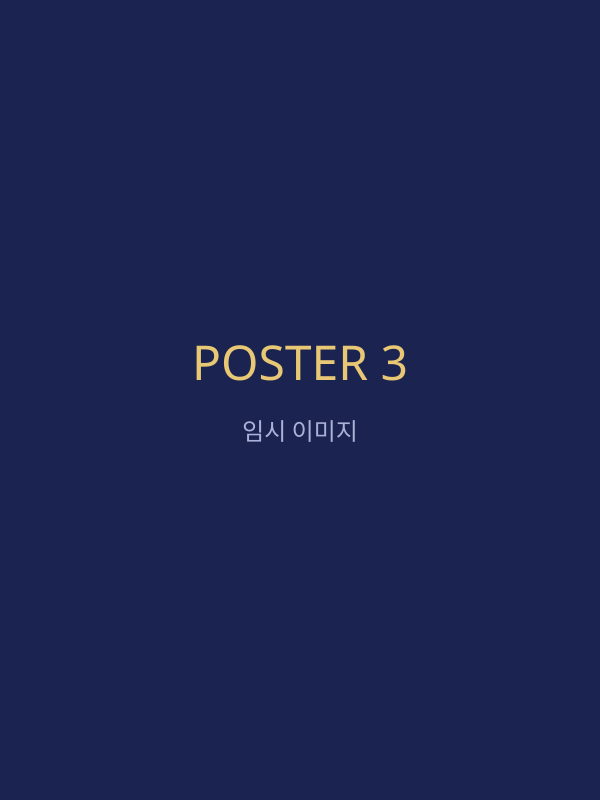

주제 말씀
"아빠 아버지여, 아버지께는 모든 것이 가능하오니
이 잔을 내게서 옮기시옵소서.
그러나 나의 원대로 마시옵고
아버지의 원대로 하옵소서."
마가복음 14:32–42 · 겟세마네 기도 (14:36)
사흘의 기도
-
첫째 날 · 막 14:36
누구에게, 무엇을 기도하는가?
-
둘째 날 · 막 14:38–39
반복하나, 포기하지 않고 나아가는가?
-
셋째 날 · 막 14:32–42
함께 보는 결과가 과연 늘 선한가?
일정표
첫째 날
- 15:00입소 및 등록
- 18:00저녁 식사
- 19:30저녁 집회
둘째 날
- 07:00새벽 기도
- 10:00오전 집회
- 19:30저녁 집회
셋째 날
- 07:00새벽 기도
- 10:00파송 예배
- 12:00퇴소
포스터 갤러리

교제 내용
수련회 교제 내용과 나눔 자료는
아래에서 확인할 수 있어요.